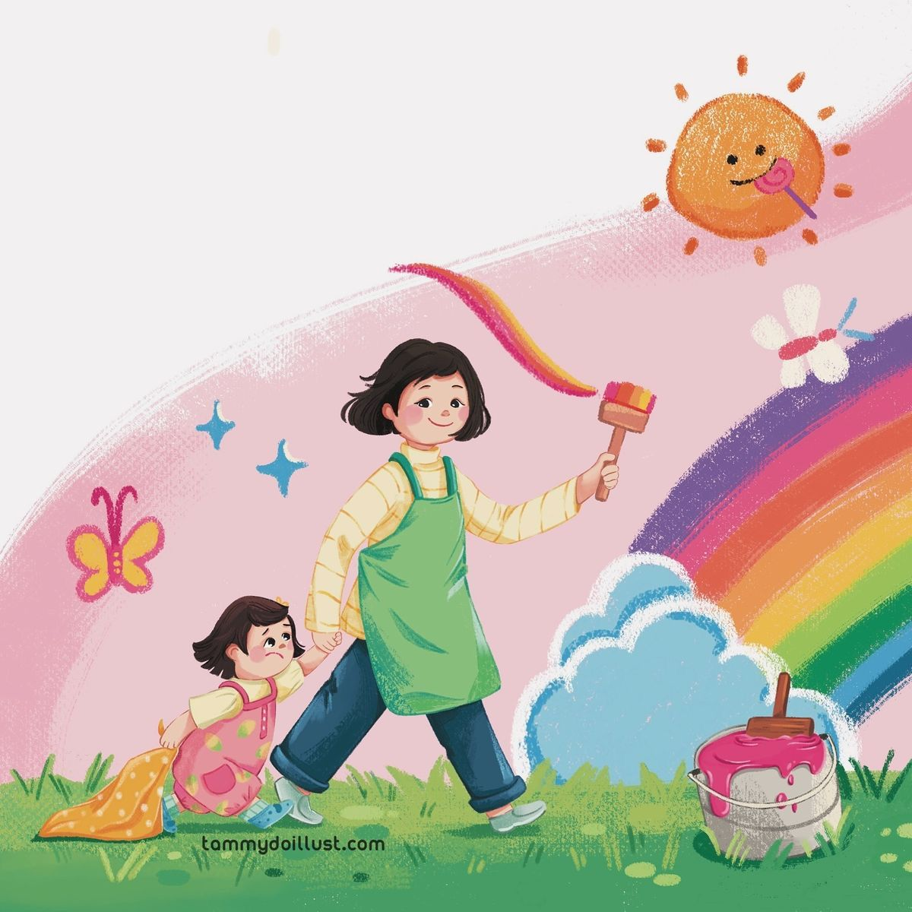

Los colores están en todas partes: en el cielo, en los juguetes, en la ropa y en la naturaleza. En preescolar, aprender los colores ayuda a los niños a observar mejor su entorno, comunicarse y desarrollar su creatividad. A través de juegos, canciones y actividades divertidas, los pequeños pueden reconocer y nombrar los colores mientras se divierten.
